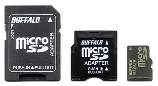

Welcome | How To Get There | Volunteer Info | Download Links
If you are planning to come out and volunteer your Linux expertise at this event, thank you. If you would like to help us plan out this event, we have started a Volunteer Sign-Up Form to try to simplify all the organizing of stuff.
If you would like to demo stuff or present something, we please ask that you submit your proposal using the form above so that we can try to plan a suitable timeslot for you. Of course, we also won't try to dissuade you if you want to come hang out with us all day long.
It would be very helpful if you could try to bring the following items with you to the event:
Some displays, cables, keyboards and mice will be borrowed from the labs. However, bringing your own will certainly be very helpful to ensure there's enough to go around. If you prefer to work in small teams and share equipment, that will be ok too.
A lot of laptops have built-in SD card readers. This might allow you to write to both the full-size SD cards used in older generation Raspberry Pi units as well as microSD cards for the newer generation Raspberry Pi units using a microSD to SD adapter.
An example of a microSD to SD adapter is on the left. A microSD card is on the far right for comparison. Image from wikimedia.org.
The intention is that you would have available all the stuff needed to work on a Raspberry Pi unit or BeagleBone or other similar recent Linux machine. You may be asked to assist with reinstallation, booting, general startup or other related introductory-type questions. You may certainly do whatever you are comfortable doing and/or call upon the assistance of your fellow Linux gurus.
When you get there, talk to the nice folks at the Info Desk to determine where you can set up your equipment. When you are ready to accept your first "customer", just mention it to the folks at the Info Desk and they can attempt to direct some folks over to you for help.
We can't guarantee exactly when our "customers" plan to show up but it seems likely that the bulk of them are likely to show up before noon. The event will run for about 8 hours to allow for some flexibility in terms of how long it might take to help folks, time for breaks and delays in their arrival times.
The installfest howto and a definition of installfests.
{kind=link}